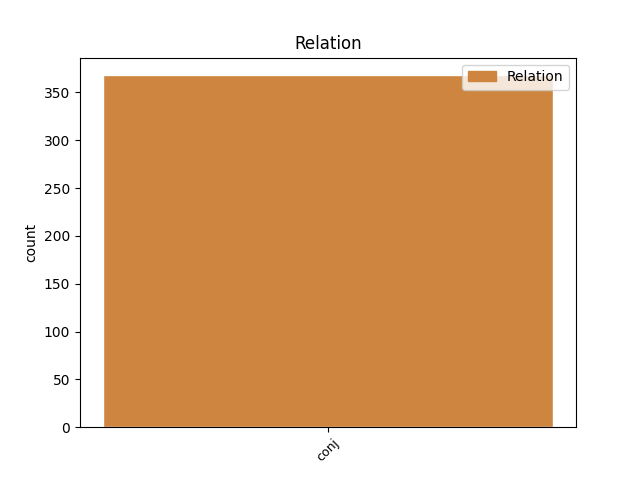
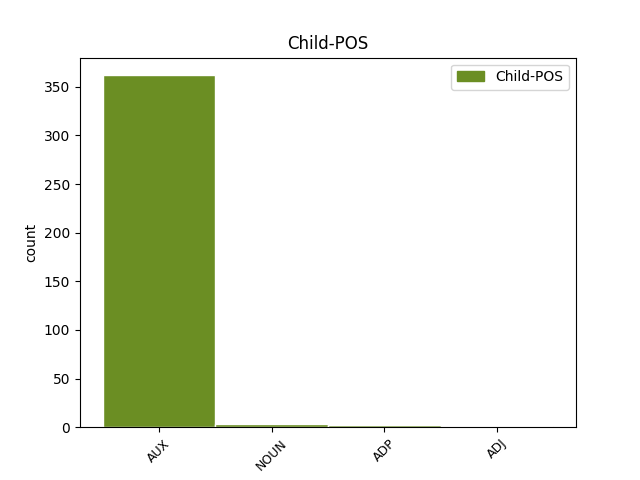

Distribution of features within this leaf



Agreement Rules sorted by frequency.
- When the dependent token is the conjunct(conj) of the head token, and the head token is VERB and the dependent token is AUX.
1 Davidsson _ _ _ _ 0 _ _ _
2 promovierte promovieren VERB VVFIN Mood=Ind|Number=Sing|Person=3|Tense=Past|VerbForm=Fin 0 _ _ _
3 1991 _ _ _ _ 0 _ _ _
4 mit _ _ _ _ 0 _ _ _
5 einer _ _ _ _ 0 _ _ _
6 Arbeit _ _ _ _ 0 _ _ _
7 über _ _ _ _ 0 _ _ _
8 Matthias _ _ _ _ 0 _ _ _
9 Weckmann _ _ _ _ 0 _ _ _
10 und _ _ _ _ 0 _ _ _
11 war sein AUX VAFIN Mood=Ind|Number=Sing|Person=3|Tense=Past|VerbForm=Fin 2 conj _ _
12 dadurch _ _ _ _ 0 _ _ _
13 der _ _ _ _ 0 _ _ _
14 erste _ _ _ _ 0 _ _ _
15 Absolvent _ _ _ _ 0 _ _ _
16 eines _ _ _ _ 0 _ _ _
17 wissenschaftlich _ _ _ _ 0 _ _ _
18 - _ _ _ _ 0 _ _ _
19 künstlerischen _ _ _ _ 0 _ _ _
20 Studiums _ _ _ _ 0 _ _ _
21 in _ _ _ _ 0 _ _ _
22 Schweden _ _ _ _ 0 _ _ _
23 . _ _ _ _ 0 _ _ _
1 Der _ _ _ _ 0 _ _ _
2 Ehemann _ _ _ _ 0 _ _ _
3 arbeitete arbeiten VERB VVFIN Mood=Ind|Number=Sing|Person=3|Tense=Past|VerbForm=Fin 0 _ _ _
4 in _ _ _ _ 0 _ _ _
5 Kiew _ _ _ _ 0 _ _ _
6 bald _ _ _ _ 0 _ _ _
7 auch _ _ _ _ 0 _ _ _
8 als _ _ _ _ 0 _ _ _
9 Drehbuchautor _ _ _ _ 0 _ _ _
10 und _ _ _ _ 0 _ _ _
11 schrieb schreiben ADP VVFIN Mood=Ind|Number=Sing|Person=3|Tense=Past|VerbForm=Fin 3 conj _ _
12 spezielle _ _ _ _ 0 _ _ _
13 Rollen _ _ _ _ 0 _ _ _
14 für _ _ _ _ 0 _ _ _
15 Marharyta _ _ _ _ 0 _ _ _
16 , _ _ _ _ 0 _ _ _
17 in _ _ _ _ 0 _ _ _
18 denen _ _ _ _ 0 _ _ _
19 ihr _ _ _ _ 0 _ _ _
20 komödiantisches _ _ _ _ 0 _ _ _
21 Talent _ _ _ _ 0 _ _ _
22 u.a. _ _ _ _ 0 _ _ _
23 als _ _ _ _ 0 _ _ _
24 Kolchos _ _ _ _ 0 _ _ _
25 - _ _ _ _ 0 _ _ _
26 Vorsitzende _ _ _ _ 0 _ _ _
27 zu _ _ _ _ 0 _ _ _
28 dem _ _ _ _ 0 _ _ _
29 Tragen _ _ _ _ 0 _ _ _
30 kam _ _ _ _ 0 _ _ _
31 . _ _ _ _ 0 _ _ _
1 Aber _ _ _ _ 0 _ _ _
2 es _ _ _ _ 0 _ _ _
3 entstanden _ _ _ _ 0 _ _ _
4 auch _ _ _ _ 0 _ _ _
5 Gesellschaften _ _ _ _ 0 _ _ _
6 , _ _ _ _ 0 _ _ _
7 die _ _ _ _ 0 _ _ _
8 gegen _ _ _ _ 0 _ _ _
9 eine _ _ _ _ 0 _ _ _
10 Gebühr _ _ _ _ 0 _ _ _
11 diese _ _ _ _ 0 _ _ _
12 Gerätschaften _ _ _ _ 0 _ _ _
13 ihren _ _ _ _ 0 _ _ _
14 Mitgliedern _ _ _ _ 0 _ _ _
15 zu _ _ _ _ 0 _ _ _
16 der _ _ _ _ 0 _ _ _
17 Verfügung _ _ _ _ 0 _ _ _
18 stellten stellen VERB VVFIN Mood=Ind|Number=Plur|Person=3|Tense=Past|VerbForm=Fin 0 _ _ _
19 oder _ _ _ _ 0 _ _ _
20 an _ _ _ _ 0 _ _ _
21 andere _ _ _ _ 0 _ _ _
22 vermieteten vermieten NOUN VVFIN Mood=Ind|Number=Plur|Person=3|Tense=Past|VerbForm=Fin 18 conj _ SpaceAfter=No
23 . _ _ _ _ 0 _ _ _
1 Ali _ _ _ _ 0 _ _ _
2 klammerte klammern VERB VVFIN Mood=Ind|Number=Sing|Person=3|Tense=Past|VerbForm=Fin 0 _ _ _
3 recht _ _ _ _ 0 _ _ _
4 häufig _ _ _ _ 0 _ _ _
5 und _ _ _ _ 0 _ _ _
6 wich weichen ADJ VVFIN Mood=Ind|Number=Sing|Person=3|Tense=Past|VerbForm=Fin 2 conj _ _
7 ansonsten _ _ _ _ 0 _ _ _
8 einer _ _ _ _ 0 _ _ _
9 Vielzahl _ _ _ _ 0 _ _ _
10 von _ _ _ _ 0 _ _ _
11 Schlägen _ _ _ _ 0 _ _ _
12 zu _ _ _ _ 0 _ _ _
13 dem _ _ _ _ 0 _ _ _
14 Kopf _ _ _ _ 0 _ _ _
15 durch _ _ _ _ 0 _ _ _
16 Meidbewegungen _ _ _ _ 0 _ _ _
17 aus _ _ _ _ 0 _ _ _
18 . _ _ _ _ 0 _ _ _
Disagree Examples:
1 War sein VERB VAFIN Mood=Ind|Number=Sing|Person=3|Tense=Past|VerbForm=Fin 0 _ _ _
2 jetzt _ _ _ _ 0 _ _ _
3 in _ _ _ _ 0 _ _ _
4 fast _ _ _ _ 0 _ _ _
5 allen _ _ _ _ 0 _ _ _
6 Tabledance _ _ _ _ 0 _ _ _
7 Clubs _ _ _ _ 0 _ _ _
8 in _ _ _ _ 0 _ _ _
9 München _ _ _ _ 0 _ _ _
10 wobei _ _ _ _ 0 _ _ _
11 ich _ _ _ _ 0 _ _ _
12 sagen _ _ _ _ 0 _ _ _
13 muss müssen AUX VMFIN Mood=Ind|Number=Sing|Person=1|Tense=Pres|VerbForm=Fin 1 conj _ SpaceAfter=No
14 , _ _ _ _ 0 _ _ _
15 dass _ _ _ _ 0 _ _ _
16 der _ _ _ _ 0 _ _ _
17 neu _ _ _ _ 0 _ _ _
18 eröffnete _ _ _ _ 0 _ _ _
19 Laden _ _ _ _ 0 _ _ _
20 Blackboxxx _ _ _ _ 0 _ _ _
21 für _ _ _ _ 0 _ _ _
22 Männer _ _ _ _ 0 _ _ _
23 der _ _ _ _ 0 _ _ _
24 mit _ _ _ _ 0 _ _ _
25 Abstand _ _ _ _ 0 _ _ _
26 beste _ _ _ _ 0 _ _ _
27 Laden _ _ _ _ 0 _ _ _
28 ist _ _ _ _ 0 _ _ _
29 . _ _ _ _ 0 _ _ _
1 Ich _ _ _ _ 0 _ _ _
2 war sein VERB VAFIN Mood=Ind|Number=Sing|Person=1|Tense=Past|VerbForm=Fin 0 _ _ _
3 schon _ _ _ _ 0 _ _ _
4 in _ _ _ _ 0 _ _ _
5 vielen _ _ _ _ 0 _ _ _
6 Cafés _ _ _ _ 0 _ _ _
7 in _ _ _ _ 0 _ _ _
8 aller _ _ _ _ 0 _ _ _
9 Herren _ _ _ _ 0 _ _ _
10 Länder _ _ _ _ 0 _ _ _
11 , _ _ _ _ 0 _ _ _
12 aber _ _ _ _ 0 _ _ _
13 mit _ _ _ _ 0 _ _ _
14 diesen _ _ _ _ 0 _ _ _
15 herrlichen _ _ _ _ 0 _ _ _
16 Torten _ _ _ _ 0 _ _ _
17 und _ _ _ _ 0 _ _ _
18 Kuchen _ _ _ _ 0 _ _ _
19 muss müssen AUX VMFIN Mood=Ind|Number=Sing|Person=3|Tense=Pres|VerbForm=Fin 2 conj _ _
20 sich _ _ _ _ 0 _ _ _
21 das _ _ _ _ 0 _ _ _
22 Café _ _ _ _ 0 _ _ _
23 an _ _ _ _ 0 _ _ _
24 dem _ _ _ _ 0 _ _ _
25 Rosengarten _ _ _ _ 0 _ _ _
26 vor _ _ _ _ 0 _ _ _
27 keinem _ _ _ _ 0 _ _ _
28 davon _ _ _ _ 0 _ _ _
29 verstecken _ _ _ _ 0 _ _ _
30 . _ _ _ _ 0 _ _ _
1 Wir _ _ _ _ 0 _ _ _
2 gehen gehen VERB VVFIN Mood=Ind|Number=Plur|Person=1|Tense=Pres|VerbForm=Fin 0 _ _ _
3 regelmäßig _ _ _ _ 0 _ _ _
4 dort _ _ _ _ 0 _ _ _
5 hin _ _ _ _ 0 _ _ _
6 und _ _ _ _ 0 _ _ _
7 wurden werden AUX VAFIN Mood=Ind|Number=Plur|Person=3|Tense=Past|VerbForm=Fin|Voice=Pass 2 conj _ _
8 noch _ _ _ _ 0 _ _ _
9 nie _ _ _ _ 0 _ _ _
10 enttäuscht _ _ _ _ 0 _ _ _
11 ! _ _ _ _ 0 _ _ _
1 Die _ _ _ _ 0 _ _ _
2 Leute _ _ _ _ 0 _ _ _
3 sind _ _ _ _ 0 _ _ _
4 echt _ _ _ _ 0 _ _ _
5 nett _ _ _ _ 0 _ _ _
6 und _ _ _ _ 0 _ _ _
7 haben haben VERB VAFIN Mood=Ind|Number=Plur|Person=3|Tense=Pres|VerbForm=Fin 0 _ _ _
8 Ahnung _ _ _ _ 0 _ _ _
9 und _ _ _ _ 0 _ _ _
10 die _ _ _ _ 0 _ _ _
11 Reparaturen _ _ _ _ 0 _ _ _
12 wurden werden AUX VAFIN Mood=Ind|Number=Plur|Person=3|Tense=Past|VerbForm=Fin|Voice=Pass 7 conj _ _
13 flott _ _ _ _ 0 _ _ _
14 durchgeführt _ _ _ _ 0 _ _ _
15 . _ _ _ _ 0 _ _ _
1 Ich _ _ _ _ 0 _ _ _
2 war sein VERB VAFIN Mood=Ind|Number=Sing|Person=1|Tense=Past|VerbForm=Fin 0 _ _ _
3 schon _ _ _ _ 0 _ _ _
4 bei _ _ _ _ 0 _ _ _
5 vielen _ _ _ _ 0 _ _ _
6 Steak _ _ _ _ 0 _ _ _
7 Restaurants _ _ _ _ 0 _ _ _
8 , _ _ _ _ 0 _ _ _
9 vor _ _ _ _ 0 _ _ _
10 gut _ _ _ _ 0 _ _ _
11 2 _ _ _ _ 0 _ _ _
12 Tagen _ _ _ _ 0 _ _ _
13 habe haben AUX VAFIN Mood=Ind|Number=Sing|Person=1|Tense=Pres|VerbForm=Fin 2 conj _ _
14 ich _ _ _ _ 0 _ _ _
15 dieses _ _ _ _ 0 _ _ _
16 Steakhaus _ _ _ _ 0 _ _ _
17 gefunden _ _ _ _ 0 _ _ _
18 . _ _ _ _ 0 _ _ _